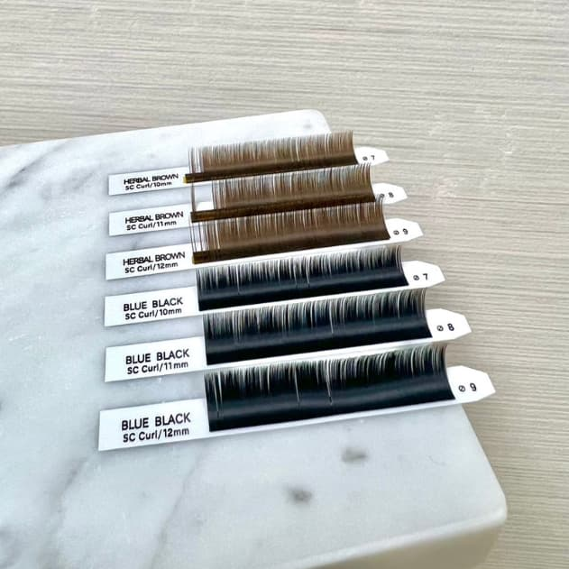

EYELASH
日式美睫EYELASH
日式美睫
使用極細的人工睫毛和優質的材料
過程安全且舒適
讓您的睫毛看起來纖長濃密
並保持自然的外觀
提供您不同長度和顏色的人工睫毛
滿足您的需求和風格
使您的眼睛更加明亮和引人注目
ATTENTION.
注意事項
- 卸妝時盡量不要使用油性卸妝油
- 嫁接完成後，每天睫毛自然掉落3~4根，屬於睫毛本身正常代謝情況
- 三天內，不要去高溫場所，以免黑膠溶解或導致睫毛變形
- 四小時內睫毛不可以碰到水，以免影響黑膠黏著度
- 應避免揉眼睛，否則真睫毛可能會斷裂
- 嫁接完成後不要擦睫毛膏及夾睫毛
PROCESS.
施作流程

討論
操作前與美睫師討論要選擇的睫毛材料及顏色， 根據您的預算，選擇自然或著豔麗的造型，一起挑選出最適合您的睫毛樣式。
前置作業
挑選出適合的睫毛樣式後，接著開始清潔眼部和眼妝，將睫毛梳順，並將下睫毛貼上透氣膠帶固定。
操作
先用酒精將所有工具消毒，用夾子夾取睫毛並沾上黑膠，依照眼中眼尾眼頭的順序，將睫毛嫁接在真睫毛的根部，嫁接完成後，將睫毛梳順及可。
PRICE LIST.
價目表
| 黑色圓毛-上睫毛 | 黑色圓毛-下睫毛 | ||
|---|---|---|---|
| 80本 | $1000 | 20本 | $200 |
| 100本 | $1200 | 30本 | $300 |
| 120本 | $1400 | 40本 | $400 |
| 140本 | $1600 | ||
| 抗菌扁毛 | +$300 |
|---|
| 本店卸除且重接 | FREE |
|---|---|
| 本店卸除不續接 | $300 |
| 初次嫁接享 | 85折 |
|---|---|
| 當月壽星個人享 | 9折 |
| 學生憑學生證個人享 | 9折 |
以上優惠皆不可重複併用
Q&A.
常見問答
A:建議是一個月到一個半月左右，因為如果黑膠殘留在睫毛太久容易產生汙垢，時間過久可能會造成毛囊炎。
A:可以的，美睫師會視個人情況及喜好接適合款式的睫毛。
A:由於每位顧客所選的睫毛長度以及嫁接根數皆不相同，但通常約2～3個小時內即可結束。
A:睫毛本來就會有一定的生長週期，所以到了一個循環週期，原生的睫毛就會掉落再重新生長，我們嫁接睫毛是把假睫毛是接在原生睫毛上，因此假睫毛也會隨著原生睫毛正常掉落，只是原本的睫毛較短，所以掉了不太明顯，因此接了假睫毛之後，才比較容易注意到睫毛掉落。
A:睫毛剛嫁接完，眼睛會因黑膠尚未乾固，有可能讓眼睛發紅，通常3~5個小時就會好轉。
A:由於假睫毛上塗有黑膠，建議還是尋找專業的美睫師使用專用卸除劑來去除。
A:建議使用卸妝水或卸妝乳，絕對不要使用卸妝油，因為油容易讓黑膠失效，導致假睫毛掉落。
A:嫁接的睫毛是不會直接碰觸肌膚，因此事沒有感覺的，本店所選用的黑膠也是較為溫和、不刺激的。過程中如果有因為黑膠尚未揮發完全，進而造成燻眼或是眼睛癢的狀況，都可隨時跟美睫師反應。
PORTFOLIO.
作品
PORTFOLIO.